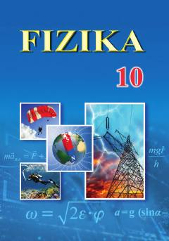

F110-sinf o'quvchilari uchun fizika fanidan asosiy darslik.
Ushbu darslik o'rta ta'lim muassasalarining 10-sinf o'quvchilari uchun mo'ljallangan bo'lib, fizika fanining mexanika, termodinamika va elektrodinamika asoslarini o'z ichiga oladi. Kitobda fizik tadqiqot metodlari, kinematika, dinamika, saqlanish qonunlari va turli muhitlarda elektr toki kabi mavzular batafsil bayon etilgan.